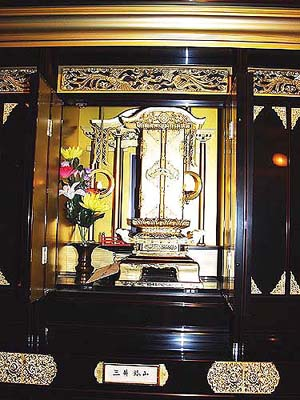

三井納骨堂
大牟田市上町一丁目 西本願寺大牟田別院
三池炭山創業碑がある大牟田駅前の笹林公園から車で5分ぐらいの所に、西本願寺大牟田別院が ある。
そこには、一般人に混じって「三井鉱山」と表札が掲げられた納骨堂がある。それは、昭和38年11月9日に発生した三井三池 三川鉱大爆発による殉職者の名簿が納められている。その数458人にのぼる。毎年命日には三井関係者による供養がなされてい るという。

（2002年7月26日撮影）
BACK